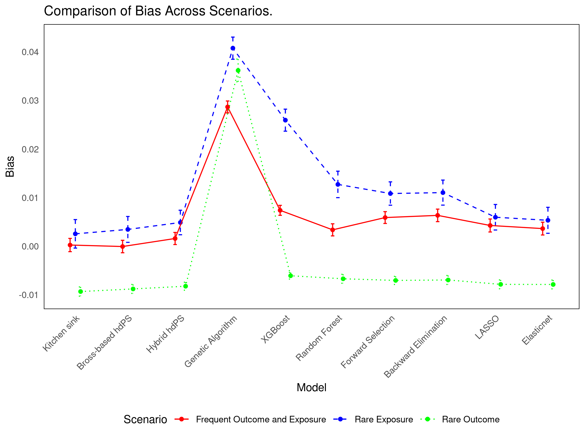
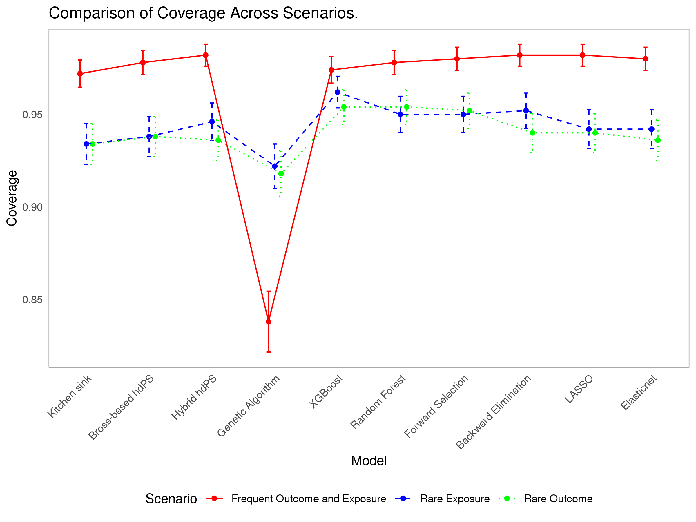

18 Statistical Approaches
18.1 Background
Recent work compares multiple variable selection strategies for hdPS analysis (Karim and Lei 2025). The study aims to identify methods that best balance bias, precision, and computational cost in causal inference using observational data. It is based on NHANES 2013–2018 data evaluating the association between obesity and diabetes.
18.2 Simulation Design
| Element | Details |
|---|---|
| Data Source | NHANES 2013–2018 |
| Sample Size | 3,000 participants per iteration |
| Iterations | 500 |
| Prevalence Scenarios | 1. Frequent exposure & frequent outcome 2. Rare exposure & frequent outcome 3. Frequent exposure & rare outcome |
| True Effect | OR = 1 (null); RD = 0 |
| Outcome Generation | Included nonlinear transforms, interactions, and a comorbidity index from 94 proxies |
| Noise Variables | 48 of 142 proxy covariates used as noise |
18.3 Methods Compared
| Method | Description |
|---|---|
| Kitchen Sink | Includes all investigator and proxy covariates (no selection) |
| Bross hdPS | Selects top 100 proxies using the Bross formula |
| Hybrid (Bross + LASSO) | First applies Bross, then refines with LASSO |
| LASSO | Penalized regression with cross-validation |
| Elastic Net | Combines LASSO and Ridge penalties to handle collinearity |
| Random Forest | Ranks variables by importance using Gini impurity |
| XGBoost | Boosted trees optimizing impurity reduction |
| Forward Selection | Adds variables sequentially based on adjusted R² |
| Backward Elimination | Removes variables iteratively based on adjusted R² |
| Genetic Algorithm | Evolves variable subsets via stochastic search |
18.4 Simulation Results

See interactive results: üëâ Shiny App
18.5 Key Takeaways
- Simpler methods (Forward/Backward selection) offer strong coverage with efficiency.
- Bross-based and Hybrid hdPS methods remain reliable and interpretable.
- Method choice should reflect the specific inferential goal: bias reduction vs variance minimization.